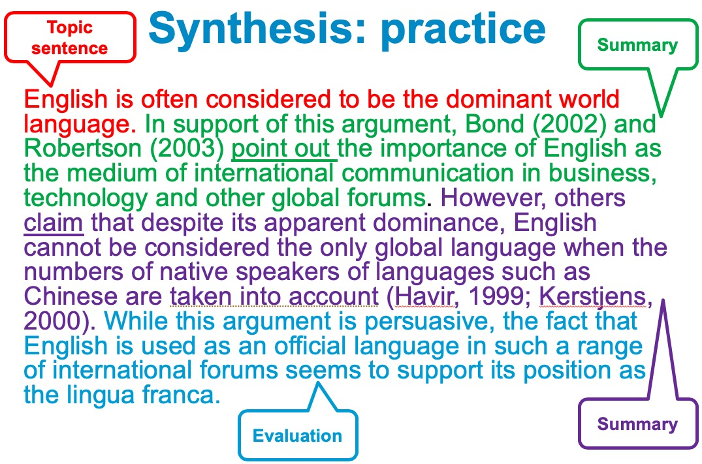

1. Identifying themes
1.1. What do you think is meant by ‘themes’ in the literature?
When you read and take notes from sources, you should identify the ideas/topics/issues that are discussed. Next, you must analyse and synthesise your notes to identify how different sources deal with the same ideas/topics/ issues. These will be the emerging themes that you have found in the literature.
1.2. Good ways to identify themes
- colour to highlight similar ideas in texts
- use mind map to draw connections between texts
- matrix/Excel to note idears from the texts
2. Literature review structure
2.1. Structure overview
- Introduction
- Main body
- Conclusion
2.2. Introduction
- Why the topic is important - is it an area of current interest?
- The scope of the review - the aspects of the topic that will be covered
- How the review is organised
- Whether the topic has been widely researched
- Whether there is debate and controversy about the topic or a consensus
- How the review links to your research topic
2.3. Main body
- be clearly and logically organised
- by theme (not source)
- by methodology
- by theory
- chronologically
- a heading(optional) for each section/idea/theme
- summarise and synthesise the key literature in your chosen area
- include your evaluation/comments on the literature
- adopt a critical (not descriptive) tone
2.4. Conclusion
- summarise the key points discussed in the main body (e.g. the main agreements/disagreements in the literature)
- provide an overall evaluation of the literature in your field
- identify gaps/issues in the literature
- explain how your research will address the gap(s)
2.5. Tips
- Don’t simply describe sources one by one
- Only summarise the key points from sources – do not focus on every detail
- Sources should be paraphrased or summarised. Avoid copying chunks of text from sources
- Ensure all sources are cited correctly in the literature review and all are included in the reference list
3. Paraphrasing and summarising
3.1. What is paraphrasing?
- allows a writer to use the ideas or information from a source in their own work
- shows you’ve understood somebody else’s idea; you’re not presenting it as your own
- helps you to avoid plagiarism
3.2. What is summarising?
- use the ideas of others in your writing
- focus on the key points from a source
- demonstrate your understanding of different viewpoints on a topic
- avoid plagiarism
3.3. Why should I paraphrase/summarise in the literature review?
- it demonstrates understanding of what you have read
- sometimes difficult ideas can be communicated more simply and directly
- it better shows how your ideas are related to or are different from what you have read
- you should not rely heavily on direct quotations
3.4. What does paraphrasing involve?
- changing the words of a text
- significantly changing the structure of the original text, but maintaining the same meaning
- keeping the length of the paraphrase approximately the same as the original text
3.5. Seven steps to a successful paraphrase
- Read original sentence
- Note key points
- Identify technical/specialist words
- Select synonyms for other words
- Change the grammatical structure
- Add a citation
- Check your paraphrase retains the original meaning
3.6. What does Summarising involve?
- be significantly shorter than the original text
- retain the same meaning as the original text
- have a different structure and/or use different words (preferably both)
- be accompanied by a reference to the source
3.7. Six steps to a successful summary
- Make notes of the key points in your own words
- Include an in-text citation
- Identify the key points
- Write the summary from your notes (not the original text)
- Read the text carefully, check vocabulary and ensure full understanding
- Check that the summary does not distort the meaning of the original text
3.8. In-text Citation
3.8.1. Information prominent
Hightlight the infromation. The author’s name and publication year are both given in brackets before the full stop.
……xxxxxx.(Wakefield,2015).
- Reporting facts and statistic ect.
- It also helps to keep your word count lower.
3.8.2. Author prominent
Hightlight the author’s name and use a reporting word to introduce the information. The publication year is given in brackets after the author’s name.
Wakefield(2015) states that ……
- The reporting verb you choose can show opinion, distance and attitude as well as the type of infromation or research cited.
3.8.3. Reporting verbs
Author prominent always need a reporting verb. URL
- verb + preposition
- Adames(2009) defines the education as the process of …
- Brown(2014) compares the modern classroom to a circus where …
- Clarke(2016) subscribes to the view of technology as a disruptive …
- verb + that
- Adames(2019) argues that vegetarians have better …
- Brown(2014) warns that too much meat in the diet can cause …
- Clarke(2016) found that more than 90% of vegans had …
- verbs: assert; demonstrate; state; observe; reveal; explain; discover; maintain; believe; imply; conclude;
- verb + none(or -ing form)
- Adames(2009) discusses the importance of …
- Brown(2014) supports using mobile devices in …
- Clarke(2016) considers the impact on the environment …
- verbs: describe; examine; investigate; refute; analyse; reject; study; justify
3.8.4. According to
You can start a citation with “According to…”.
According to Adames(2009), he found that vegans are …
According to Adames(2009), found that vegans are …
According to Brown(2014), using mobile devices in …
According to Clarke(2016), the impact on the environment …
According to Clarke(2016), describes the impact on the environment …
3.8.5. Targeted Reading and Use of Evidence
3.8.6. Research Question with Justification Example
According to Smith and Jones (2017) and Tyler (2016), audience engagement is motivated primarily by interest in the exhibit itself whereas Johns, Barber and Lewis et al (2015) claim that environmental factors play a much greater part. The significance and purpose of this question is that, through conducting primary research, in the form of qualitative data this research aims to apply and build on existing studies to determine the dominant influences in audience engagement with museum exhibits.
4. Synthesising sources
4.1. The definition of synthesis
Synthesising involves combining ideas from a range of sources in order to group and present common ideas or arguments.
4.2. The importance of synthesis in literature review
Synthesising allows you to show that you have read widely on a topic, combined information from multiple sources and used and cited multiple sources – all of which are required in a literature review.
4.3. A step-by-step guide to synthesis
- Read all the texts.
- Take notes in your own words.
- Write a short outline of each text on one piece of paper so it is easy to compare all the texts.
- Look for common themes in the texts. Use different colours to highlight similar themes. Make a list of the similarities.
- Draft the topic sentence.
- Write the ideas in your own words using summary or paraphrase. Cite all authors who have expressed the same or similar ideas.
4.4. A sample of synthesis

5. Academic writing
5.1. Paragraph structure
- Topic sentence
- Introduction to a particular/group of studies
- Summary of the content of the studies
- Evaluation of the literature
- Concluding sentence
5.2. Signposting language
It is important to guide the reader from one point/paragraph to the next in your literature review.
5.3. Reporting verbs
Reporting verbs are important as they indicate your view of the source.
5.4. Academic writing style
- Do not use contractions
- don’t ——> do not
- Do not use personal language
- I think… ——> the research highlights…
- Do not use phrasal verbs if there is a single verb alternative
- to go up ——> to increase
- Do not use informal vocabulary
- pretty big ——> quite large